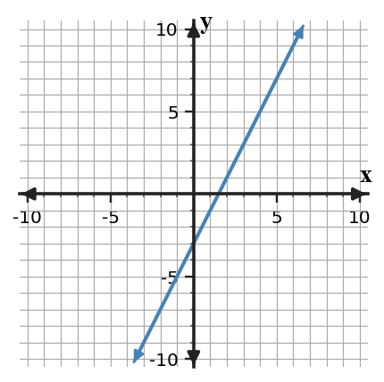

Mathematical idea: A linear equation is a compact way to record slope and intercept information.
Today you will write equations from features, graph information, tables, and situations. You will compare methods and decide which one is efficient for the information given.
Learning Target: Students will write linear equations from graphs, tables, and situations.
I can statements
This is a long-range preview for future lessons. Do not solve it today. Instead, annotate it individually. Circle anything familiar, underline symbols or directions that seem important, and write notes about what information you think will be needed later.
As you annotate, ask yourself: What parts (words, symbols, graphs) do you KNOW? What parts look FAMILIAR? What parts look like jibberish?
Synthesize one relationship in four ways: equation, table, graphing points, and context. The slope must be $-2$ and the relationship must contain $(0,12)$.
Teacher preview: Have students annotate for familiar features only. Future task ID 2-S3-DOK4.01; do not solve it today.
Directions
Read the introduction aloud with a partner or in a small group. As you read, annotate the text by highlighting important ideas, circling key vocabulary, and writing short notes about connections, questions, or predictions in the margins.
Linear equations often use the form $y=mx+b$. In that form, $m$ represents slope and $b$ represents the $y$-intercept or starting value. Reading those two parts correctly is the first step toward writing a useful equation.
Tables give slope evidence through repeated changes. When the input values increase by equal amounts, the slope comes from the output change divided by the input change. If the table includes $x=0$, the starting value can be read directly.
Students may write the same line in more than one way before simplifying. One student might use slope and a point, while another works backward through a table to find $x=0$. If both methods preserve the same rate and starting value, they should lead to equivalent equations.
Graphs support equation writing when key points are visible. The intercept tells where the graph crosses the vertical axis, and another point helps confirm the slope. Marked points are stronger evidence than a visual estimate alone.
In contexts, the equation should match the story. The coefficient on $x$ should describe repeated change, and the constant term should describe the amount present at the start. A correct equation should make sense when tested with a few values.
Teacher: Listen for students naming the specific feature and representation from the reading, not just repeating the vocabulary word.
Stop and Discuss
Teacher answers: 1) What do $m$ and $b$ represent in slope-intercept form? is answered in paragraph A. 2) How can a table help you find the slope? is answered in paragraph B. 3) Paragraph C implies the answer; ask students to cite the sentence that supports their inference.
A linear equation is $y=5x-7$.
Teacher answer key: $m=5$, $b=-7$; rate 5 per input and starting value -7. Misconception watch: require students to name the representation evidence they used.
A linear equation is $y=-2x+6$.
Teacher answer key: $m=-2$, $b=6$; rate -2 per input and starting value 6. Follow-up: ask one student to explain how this parallels the example without copying steps blindly.
Stop and Discuss
Teacher discussion note: Both tasks connect symbols to meaning before doing any graphing. Push students to cite a number, feature, or context phrase.
A line crosses the $y$-axis at 4 and passes through $(2,10)$.
Teacher answer key: Slope $3$; equation $y=3x+4$; $(0,4)$ is the intercept. Misconception watch: require students to name the representation evidence they used.
A line crosses the $y$-axis at $-1$ and passes through $(4,7)$.
Teacher answer key: Slope 2; equation $y=2x-1$; $(0,-1)$ is the intercept. Follow-up: ask one student to explain how this parallels the example without copying steps blindly.
Stop and Discuss
Teacher discussion note: Visible intercept plus one more point is enough to find the equation. Push students to cite a number, feature, or context phrase.
The table shows a linear relationship.
| $x$ | 0 | 2 | 4 | 6 |
|---|---|---|---|---|
| $y$ | 5 | 11 | 17 | 23 |
Teacher answer key: Slope 3; start 5; equation $y=3x+5$. Misconception watch: require students to name the representation evidence they used.
The table shows a linear relationship.
| $x$ | 0 | 3 | 6 | 9 |
|---|---|---|---|---|
| $y$ | -2 | 4 | 10 | 16 |
Teacher answer key: Slope 2; start -2; equation $y=2x-2$. Follow-up: ask one student to explain how this parallels the example without copying steps blindly.
Stop and Discuss
Teacher discussion note: Equal input intervals make slope easier to compute and $x=0$ gives the intercept. Push students to cite a number, feature, or context phrase.
A line passes through $(1,7)$ and $(5,19)$. Student A substitutes into $y=mx+b$. Student B builds a table back to $x=0$.
Teacher answer key: Slope 3; equation $y=3x+4$; substitution is efficient once the slope is known. Misconception watch: require students to name the representation evidence they used.
A line passes through $(2,-1)$ and $(6,7)$. One student substitutes into $y=mx+b$; another works backward to $x=0$.
Teacher answer key: Slope 2; equation $y=2x-5$; either method works, substitution is direct. Follow-up: ask one student to explain how this parallels the example without copying steps blindly.
Stop and Discuss
Teacher discussion note: Students should choose a method based on the information available, not personal habit alone. Push students to cite a number, feature, or context phrase.
Writing linear equations means turning rate and starting value information into a rule.
Slope-intercept form $y=mx+b$ records both features in one compact expression.
A common error is finding the slope correctly but using the wrong starting value.
Strong understanding means being able to write an equation from a graph, table, or story and explain why the pieces match.
Look back at the future task. Do not solve it yet. Highlight one part that makes more sense now than it did at the beginning. Circle one part that still feels unfamiliar. Write one sentence about what representation you would look at first.
Identify $m$ and $b$ in $y=-4x+9$.
Write the equation of the line shown in the graph.

What is one idea about writing linear equations you understand better now than at the start of class? Write at least one complete sentence.
What is one thing about writing linear equations you still want to understand or practice? Be specific — name the idea, not just "everything."